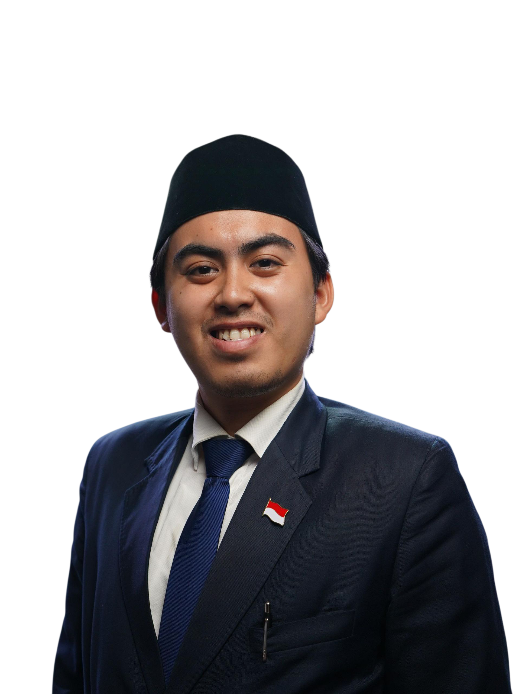

Sains material
Menempuh pendidikan doktoral di bidang metalurgi serbuk dan material komposit. Saya meraih gelar magister dari universitas yang sama pada 2023 dengan predikat summa cum laude.
Sains material / Diplomasi publik
Menghubungkan pemikiran ilmiah dan kemanusiaan untuk membangun masa depan yang lebih baik.
Saya adalah peneliti doktoral asal Indonesia di bidang metalurgi serbuk dan material komposit di Peter the Great St. Petersburg Polytechnic University, sekaligus praktisi diplomasi publik yang berfokus pada kepemudaan dan hubungan Indonesia–Rusia.
Kenali perjalanan saya
Jambi, IndonesiaRiset · Dialog
Satu tujuan bersama
Menempuh pendidikan doktoral di bidang metalurgi serbuk dan material komposit. Saya meraih gelar magister dari universitas yang sama pada 2023 dengan predikat summa cum laude.
Selama lima tahun aktif di Perhimpunan Mahasiswa Indonesia di Rusia (PERMIRA), serta berbagai inisiatif kepemudaan dan forum publik Indonesia–Rusia.
Di luar laboratorium
Kepemimpinan
Ketua Badan Perwakilan Komite Nasional Pemuda Indonesia (KNPI) di Federasi Rusia dan Penasihat Urusan Kepemudaan bagi Presiden B2BASEAN.
Penghargaan
Diberikan atas kontribusi di bidang sosial, kepemimpinan, dan diplomasi. Penghargaan diserahkan di Kedutaan Besar Republik Indonesia di Moskow.
Sebuah keyakinan
“Investasi terbaik adalah investasi pada generasi muda.”Baca berita